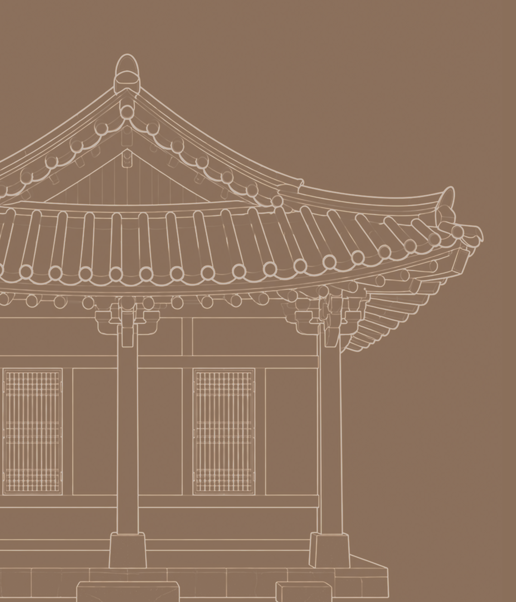
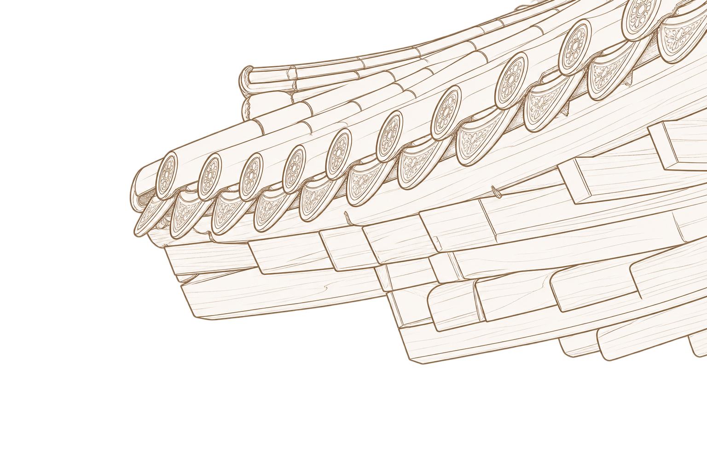
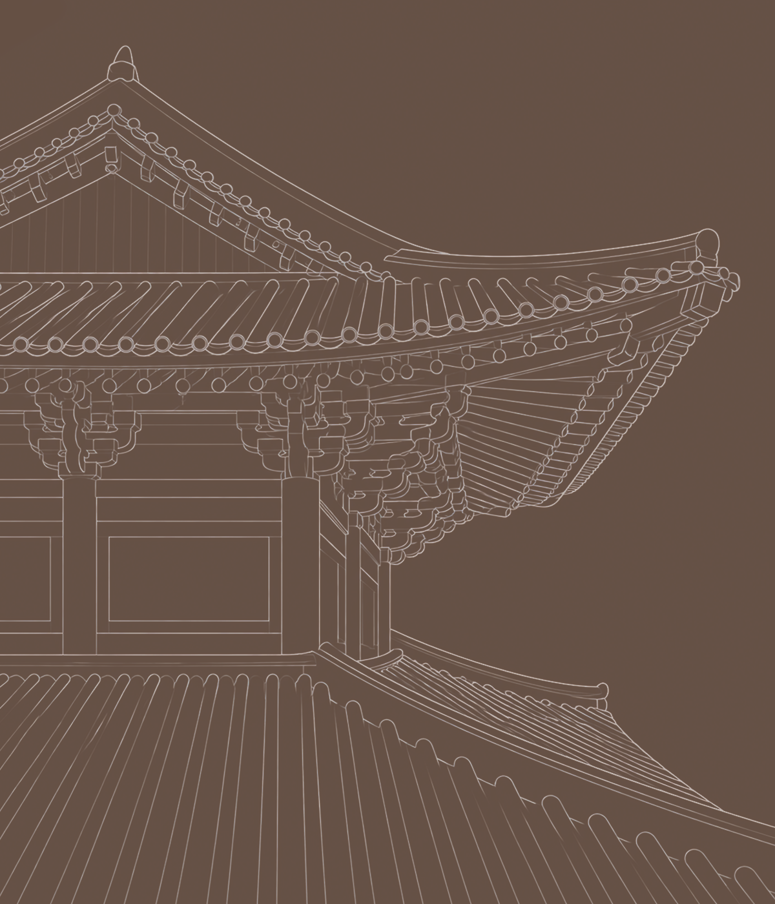
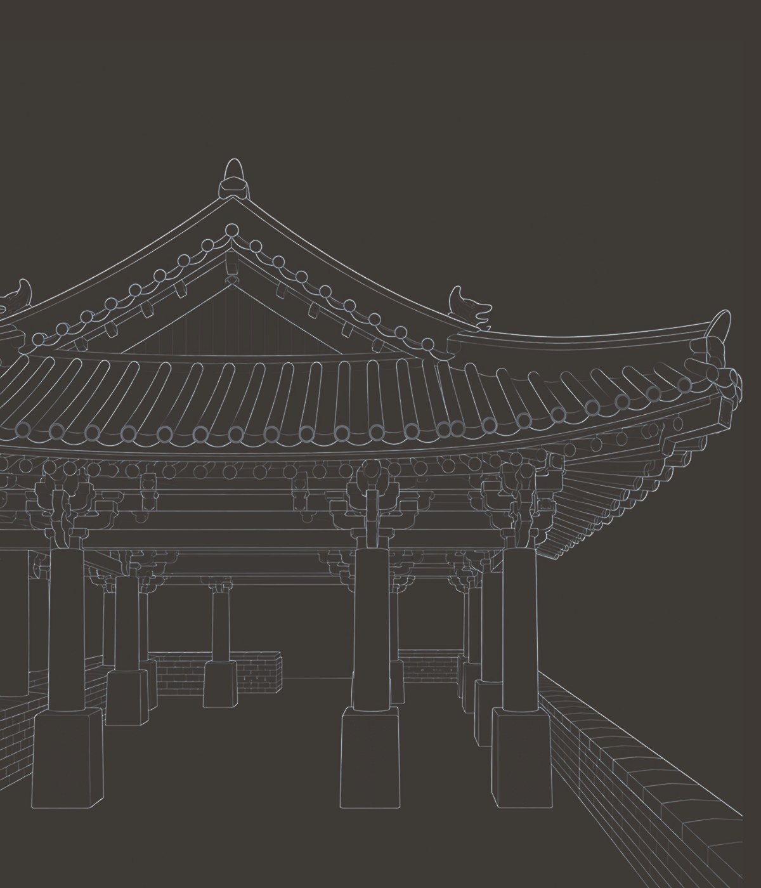

민가HOUSE
일상의 처마는 빛을 부드럽게 받아들이고, 생활 공간에 낮고 긴 그늘을 드리웁니다. 해가 움직이면 마루 앞의 밝기도 천천히 달라집니다.
In an everyday home, the eaves soften daylight and cast a long, gentle shade. As the sun moves, the light across the porch slowly changes.
EAVES · LIGHT · SHADOW
처마는 지붕의 끝에서 멈추지 않습니다. 시간과 계절에 따라 빛을 걸러내고
그 아래에 서로 다른 그림자와 공간의 경계를 만들어냅니다.
Eaves do more than finish a roof. Across hours and seasons, they filter light and shape the boundary between shadow and space below.
처마 아래의 빛과 그림자를 관찰하고, 서로 다른 건축의 구조를 비교합니다.
형태와 시간에 따라 변화하는 공간을 하나의 경험으로 연결합니다.
Observe light and shadow beneath the eaves, compare architectural forms, and follow how space changes over time.
우리는 처마의 형태보다, 그 아래의 빛을 바라보았습니다.
한옥의 처마는 아름다운 곡선으로 먼저 기억되지만, 처마의 길이와 구조는 빛이 들어오는 깊이와 그림자가 머무는 범위를 변화시킵니다.
We looked beyond the shape of the eaves to the light beneath them.
Their depth and structure change how far light reaches and where shadow remains.

서로 다른 처마는, 서로 다른 빛을 만듭니다.
민가·사찰·성문의 처마는 각기 다른 길이와 구조를 갖고 있습니다. 같은 빛 아래에서도, 그 아래에 머무는 그림자는 다르게 나타납니다.
Different eaves create different qualities of light.
The eaves of houses, temples, and gates differ in depth and structure. Even under the same light, the shadows beneath them take different forms.

일상의 처마는 빛을 부드럽게 받아들이고, 생활 공간에 낮고 긴 그늘을 드리웁니다. 해가 움직이면 마루 앞의 밝기도 천천히 달라집니다.
In an everyday home, the eaves soften daylight and cast a long, gentle shade. As the sun moves, the light across the porch slowly changes.

깊고 겹쳐진 처마는 빛을 여러 겹으로 거르며, 구조 아래 풍부한 그림자를 만듭니다. 기둥 사이로 들어온 빛은 층층이 다른 명암을 남깁니다.
Deep, layered eaves filter light and gather rich shadows beneath the structure. Light between the columns leaves distinct layers of brightness and shade.

열린 통로와 넓은 지붕 아래, 빛과 그늘의 경계가 공간을 가로지릅니다. 바깥의 밝은 공간과 안쪽의 그늘이 또렷하게 대비됩니다.
Beneath the broad roof, the boundary of light and shade crosses open space. The bright exterior contrasts with the shaded passage within.
형태의 차이는 결국, 빛이 들어오는 방식의 차이로 나타납니다.
민가의 낮은 그늘, 사찰의 겹친 그림자, 성문과 누각 아래 열린 빛은 같은 시간에도 서로 다른 공간을 만듭니다.
처마를 보여주는 것이 아니라, 처마가 만드는 환경을 발견하게 합니다.
A difference in form becomes a difference in how light enters.
A home, a temple, and a gate shape distinct spaces even under the same sun.
We invite visitors to discover the environment made by the eaves.
처마의 작동을 보고, 비교하고, 직접 변화시킵니다.
Observe, compare, and change how the eaves shape light.
처마 아래의 빛과 그림자를 바라봅니다.
Observe light and shadow beneath the eaves.
빛이 닿는 자리와 그림자가 머무는 경계를 살핍니다.
Notice where light reaches and shadow remains.
민가·사찰·성문/누각의 차이를 비교합니다.
Compare the house, temple, and gate or pavilion.
시간과 환경 조건을 직접 변화시킵니다.
Change the time and conditions yourself.
처마의 형태가 빛과 그림자를 어떻게 바꾸는지 발견합니다.
Discover how the eaves change light and shadow.
Viewer와 Archive에서 시간의 변화와 실제 장소를 탐색합니다.
Explore time and real places through Viewer and Archive.